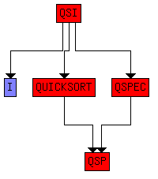

| 7 Showing module dependencies |
| 
| Top |
| 
| 9 SML translator |
|
| 8 Drawing a module dependency graph |
8 Drawing a module dependency graph
If run on a file X.rsl this generates input for the
Visualisation of Computer Graphs (VCG) tool in a file X.vcg.
For example, applying it to the scheme QSI from
section 10.14 generates a file which VCG displays as below.

Module dependencies for the scheme QSI
VCG does automatic layout, but there are a number of parameters that
may be set interactively or in the file X.vcg to change the
result. The graph can be exported as a graphic file in various formats
for printing or use in documents.
For printing diagrams in black and white involving schemes and
objects, it is useful to change "red" to "white" near the start of
X.vcg, and to export from VCG to postscript format using the
"grey" colour mode rather than "b&w". This gives a black and
white diagram in which schemes are white rectangles and objects are
lightly shaded rectangles.
Chris George, April 17, 2008
| 8 Drawing a module dependency graph |
| 7 Showing module dependencies |
| |
| Top |
| |
| 9 SML translator |
|